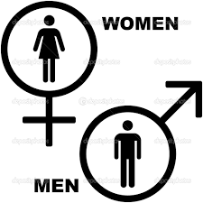

Shubham Tulasyan, Roll No.: 150102065, Branch: ECE
;
Chaitanya Nivsarkar, Roll No.: 150108006, Branch: EEE
;
Karan Deshmukh, Roll No.: 150108011, Branch: EEE
;
Ratikant Patil, Roll No.: 150108027, Branch: EEE
;
Abstract
Voice classification goes beyond just the frequency of the voice and thus requires additional feature detection and learning based on these features. We used five different models to get the initial accuracies and then used some ensemble methods such as bagging and feature extraction techniques such as PCA to improve the accuracies.
1. Introduction
Human ear has an excellent mechanism of perceiving the voice. It distinguishes the voice based on factors such as the loudness, frequency, the pitch and the resonating frequency. we will be distinguishing the human voice based on the genders - male or female. We will also be analyzing the be model that distinguishes the voices based on the training models.
1.1 Introduction to Problem
A human ear can distinguish between a male and female voice easily. If we want to teach a machine to do the same then what features of a voice would the machine require to classify ?
1.2 Figure
Block diagram of the system. All images must be put in a Pictures folder. An example image

1.3 Literature Review
Write something here.
1.4 Proposed Approach
Describe your approach briefly here.
1.5 Report Organization
The report is organized as follows: Problem section describes the problem we are trying to solve, Proposed method section describes different approaches we took to solve the problem, Experiment section describes the overall result and accuracies we got from all the different approaches and overall conclusions are mentioned in conclusion section.